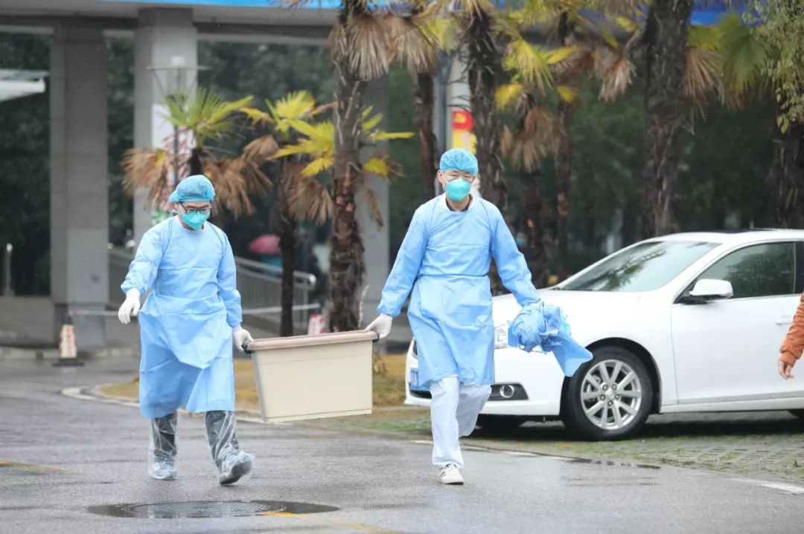

武汉“封城”首日实录：医院少床位、防护缺资源、病患难隔离
原文链接 备份链接 不管是医生、护士、病患、疑似病患，还是星夜出城的情侣、着急的母亲、加班的创业者，没有人提到现在是春节，今天是除夕 文 |《财经》记者 房宫一柳 陈晶 编辑 | 宋玮 一些武汉人起床晚，他们可能比全国网民更晚知道武汉“封 …

记者 | 驳静 董冀宁
实习记者 | 李秀莉

昨天下午，“湖北之声”发布《武汉紧急求援》，指出多家医院物资紧张，可能只够维持3-5天。本刊记者接触到的一线医护人员也反应了同样的情况。“为什么我们显得这么着急呢？病毒肆虐、患者翻倍，这些我们都有办法克服，无非是勤消毒、三班倒，但假如口罩没了的话，只要有一名医护人员疑似感染，十几位同科室的同事马上都要隔离，这个门诊就垮了。”武汉市一位三甲医院物资科负责人杨照如是说。
在这几天，我们武汉肺炎的系列报道发出后，不断有爱心读者咨询我们如何捐赠武汉，为武汉提供帮助。《三联生活周刊》将参与协调捐赠信息，帮助大家更有效率地完成对接。
我们在《三联生活周刊》的官方微博上开通了#三联在行动#的话题，大家有匹配资源的，可以和我们实时互动。

“缺的东西太多了”
▲▲▲
武汉各个医院医疗物资缺乏的信息在网上铺天盖地，是从1月23号开始的。包括武汉大学人民医院、武汉科技大学附属天佑医院在内的众多三甲医院通过官微、微信群直接发布海报，面向社会公开征集口罩、防护服等医疗物资。处在抗击新型冠状病毒一线的医院以物资科长或工会主席挂帅，越过卫计委和慈善组织，直接向社会“喊话”，征集医疗物资。我刊微博也收到大量读者私信，他们多有亲人在医院工作，对亲友处在防护物资缺乏的易感染环境表达忧虑。
医院的医疗物资急缺到什么程度？

杨照是武汉市指定的七家收治新型冠状肺炎定点医院之一的物资科负责人，他向本刊展示了两份清单，都是面向社会筹集医疗物资所用。1月23日的清单上写着“需医用外科口罩、医用防护口罩（捐赠产品需满足YY0469-2010和GB19083-2010标准）”，而仅仅第二天，这些标准被悄然抹去，简化为“N95口罩（无换气阀）10万个、一次性医用外科口罩20万个、普通口罩1万个”。
作为医院医疗耗材采购委员会的成员，杨照很清楚“YY”所代表医用标准的意义。同样能够过滤99.5%以上颗粒物的口罩，减去“YY”标准后，意味着，它们会比同规格防雾霾口罩少一层蓝色无纺布，但是，就是这层无纺布，让医用外科口罩拥有比普通防粉尘N95口罩拥有更高的抗菌能力。
同时，医用标准也意味着更严苛的使用规定。普通N95口罩“可重复使用，不可水洗”，相比之下，能进入隔离区的医用外科口罩，则要求“一次性使用，每4-6小时更换”。作为要上手术台的医疗耗材，医院定期为送来的口罩留样，甚至发生过召回事件。“可以说是口罩本身和这一套严苛的卫生标准共同保障着医护人员的安全。”杨照告诉本刊，而在此之前，医院从未采购过非医疗标准的口罩。

但他现在顾不了这么多了，他告诉本刊，如果再不能得到有效补充，他所在的医院，这家位列武汉市卫健委指定的7家新型冠状病毒收治医院的三甲医院，口罩只够继续供应两个星期了。
因为每天都涌进大量病人，具体物资的缺口难以统计，武汉普仁医院一位负责人称“我能说出来具体数据的是过氧乙酸，起码需要800瓶”，800瓶用于消毒的过氧乙酸，可以撑半个月至一个月，其余口罩、防护服则难以统计，只能用着看。
在汉阳医院，n95防护口罩库存已全部用完，一次性使用的防护服剩余不足千件，该医院设备科的王璐告诉本刊，这些防护服按正常每天两三百套的消耗量，最多能再支撑2~3天。为控制用量，尽可能撑到年后工厂恢复生产。他们目前采取的办法是，一套防护服重复多次使用。且优先供应给呼吸科、内分泌科和隔离病区的医护工作者。其他医务工作者只能戴基本的挂耳式口罩、穿普通工作服，“基本是暴露的状态”。
把全副武装优先给一线接待门诊的医生使用，几乎是所有物资紧缺医院采取的策略。
李由的母亲在武汉黄陂区人民医院工作。该医院“发热门诊已经爆满”，二线和三线的医生随时待命。李由的母亲就是待命的医生之一，处在这样一个交叉感染的环境里，却远远“轮不到防护服”。武汉市第五医院负责人在接受本刊采访时则提到，除了医用外科口罩，其余防护物资都紧缺，以至于该医院“一度开不了诊”。
爆发的需求
▲▲▲
杨照是在1月20日真正意识到医院医用耗材的供应可能要出现问题的。这天，武汉市通报新增100多个新型冠状病毒肺炎病例。
从去年底武汉首次通报有27例患者感染新型肺炎以来，杨照称，他们院里呼吸科和发热门诊的就诊人数一直在增加，但总体上都处在可控的增长。“其实增加医用耗材的采购、保障医护人员安全，我们院领导早就做了这样的决定。比如从1月14日开始，院里的感染科要求穿隔离防护服，这在全省都是很早的，对于我们保障部门来说，医院平时也有做相应的准备。”
但是关键问题在于，医疗用品采购，对于医院来说是一项复杂的系统工程，“像类似口罩、消毒液这种大批量低价值的医疗耗材，通常是由地区卫计委通过省级的阳光采购平台统一招标采购的，也有一部分是医院通过医药代理公司采购，周期相对较长。”杨照说，报告打上去后，虽然等的时间比较长，得到的反馈大都还算积极，不少企业表示有库存可以调货，但是也有医药代表提醒他，年底企业要停生产线，建议医院多采购一些。但是，因为当时还不确定自己所在的医院是否会被列为定点医院，院领导最终拍板了一个相对保守的数字。

医务人员身着防护服接诊（中新社供图）
但没想到，1月20日武汉通报新增病例后，超过日常人数10倍的患者涌入了医院，“这中间既有病毒潜伏期的问题，也有本身传染病爆发带给人们心态上的变化”，杨照说，虽然截止到目前，因为检验盒部署不足，部分患者仍然无法确诊新型冠状病毒肺炎，但同时，医院接诊的普通肺炎患者和因伤寒引起的发热患者也在迅速增长。
“所以院里肯定也有相应调整，比如按原来的患者密度，一天可能4次消毒就够了，现在要增加到8次。我们尽可能调整和优化了新型冠状病毒患者的确诊和治疗方案，比如通过设立发热门诊专区、做CT影像等排除一部分普通肺炎患者，减少不必要的医疗资源浪费，但仍然无法控制患者数量的井喷。”
2天后的1月22日，武汉市卫计委公布的7家发热门诊定点医院（市汉口医院、市红十字会医院、市七医院、市四医院西院区、市九医院、市武昌医院、市五医院）为新型冠状病毒感染的疑似病例和确诊病例收治医院，但医疗耗材短缺的危机已经发生了。
医院常规的采购渠道目前处于供不应求的状态。“厂家要么已经放假，要么订不到货，各家医院都很紧缺。”王璐他们在发出网络求助前，向七八家武汉当地的医院打电话借调防护服，结果“一套都借不到，每一家医院都没有。”
武汉科技大学附属天佑医院同样发布了“接受爱心捐赠公告”，该院医生告诉本刊，几天前他们想办法自己购买了一些，但也难以为继，“发了单子下来过，让我们填报需求，也不知道什么时候才能有”。即使是医院，面对突发的疫病也难言准备完全，一位负责采购的同事任菲称，按照正常程序，“防护服这个东西几乎已经很久没用过。在库存里面量都比较少。爆发之前没有备，等大家接到通知时厂家早就放假，很多货调不过来，提前抢可能才有。”
一位上述七家医院之一的眼科医生告诉本刊，他们处于二线科室的医生甚至只能通过海外的同学等协调购买，“我们有美国的同学，有澳大利亚的，有个北医联盟是同济的，他们发挥了很重要的作用，他们马上就呼吁帮我们买了，马上就看到截图说没有货了。我就要了一点，不敢要多，不好意思一个人用，还是要分出去，自己留个一两套。”眼科医生所在的医院目前已经转走了两个重症医生，隔离了好几个。
难以抵达的救援
▲▲▲
医院的“自救”在互联网上引发巨大反响，包括武汉大学校友会、卓明灾害信息服务中心，以及大量粉丝团体都在积极协调各方资源。武汉普仁医院一位医生告诉本刊，自从呼吁信息发出后，他就不断接到电话，“就在接你电话的这个当口，就有好几个来电”。然而，这其中大多数的电话却并不能转化为有效的救助，原因是“物资进不来”。
家住重庆的莲子，这几天都在寻找能够接受医护物资的医院。受她在澳洲开诊所的弟弟所托，购买了一万五千个医用level2口罩，但是出海关需要出具国内接收单位的函件，而据“武汉市新冠肺炎防控指挥部通告（第4号）”，对境外捐赠的规定是“暂不接受”。她看到1月24日网上开始流传的一封感谢信，盖着大红“湖北省归国华侨联合会”的印章。
该组织称，有海外侨胞发起募捐医用口罩活动，委托他们捐赠。该组织感谢海外侨胞的拳拳爱国之心，但也无奈表示，在与湖北省慈善总会联系时，对方称“疫情处置需要按照湖北省新型冠状病毒感染的肺炎防控指挥部的统一安排，暂不接受海外捐款款物”。
本刊联系了该组织，核实到感谢信是真实的，湖北省慈善总会给出的理由是，武汉市新冠肺炎防控指挥部通告（第4号）规定，“暂不接受与疫情防控无关的物资和境外捐赠”，该规定公布于1月23日。正是这种“拒之门外”让莲子舍弃官方渠道，转而通过朋友转朋友的方式设法捐赠。而普通民众第一时间想到的武汉红十字会，也公布了5个座机电话和1个手机号码，用以接受捐赠，遗憾的是，多有网友挨个拨打多次，未能成功接通。
求助发出后，很多个人捐助者和明星粉丝群联系上医院请求捐助。“有一个杨幂的粉丝群，建成速度非常快，一下子大概拉了一百七八十号人。也在跟我们沟通，要什么样的口罩。”棘手的是，N95防护口罩和防护服这类专业标准较高的物资，热心网友们也很难找到货源，王璐说，很多捐助者手里的口罩只能满足基本的防尘防雾的作用。
除此之外，防护服缺口仍然很大。任菲告诉本刊，目前捐助者还是以个人和小团体为主，他们一般也是在网上购买到这些物资后再寄过来。因此捐助者的购买渠道较窄；防护服的单价较高可能是捐助者寥的另一个原因。
武汉“封城”后，目前通行的物流公司主要是顺丰，1月23日，顺丰发布了针对非常时间的收寄服务通知，称“优先保障特殊物资运输派送”。捐赠志愿者和顺丰客服沟通，得到的回复是3公斤以下的东西可以分包装送过去，但是现在整个武汉市情况紧急，他们人员有限，需要收货人自提。而关于大件物品的寄送，许多医院与捐赠者都在自己想办法。顺丰的工作人员透露给本刊的是，光是23号这一天，全国范围内寄送医用物资就超过了60吨，这个数字是平常运量的8-10倍。
王璐告诉本刊，1月24日上午刚接到的通知是，医院开证明后，就可以外派专用车辆去接这些货。但王璐新的担忧是，根据他们听到的风声，武汉下一步就是封区，封区以后各区之间的物流交通怎么办？她希望不会成为更大的难题。
（杨照、任菲和王璐为化名）
作者档案

**驳静
**
三联记者，喜欢听故事、说人话。
26分钟前


三联生活周刊
个人微博、豆瓣都是：驳静

**董冀宁
**
一个好吃的人
26分钟前
三联生活周刊
个人微博：@董记煎饼
#我在疫情一线#
话题征稿持续进行中
《三联生活周刊》全媒体现面向所有读者征稿。包括但不限于：奋斗在疫情一线的医护人员、媒体同行们的故事，专业人士对接下来防疫工作的建议……
此次征稿形式不限：文字（1500～2500字为佳）、图片（原创拍摄）、音频视频（原创录制）都欢迎。大家携手，共度难关！注：请务必保证故事真实、客观，不造谣、不传谣。
《三联生活周刊》微信公号投稿邮箱：zhuangao@lifeweek.com.cn来稿格式：#我在疫情一线#➕标题《三联生活周刊》官方微博参与话题：#我在疫情一线#《三联生活周刊》中读APP投稿邮箱（音频投稿为主，5分钟以内为佳）zhongdu@lifeweek.com.cn
期待你的来稿！
⊙文章版权归《三联生活周刊》所有，欢迎转发到朋友圈，转载开白请联系后台。未经同意，严禁转载至网站、APP等。
驳静
微信扫一扫赞赏作者 赞赏
长按二维码向我转账
受苹果公司新规定影响，微信 iOS 版的赞赏功能被关闭，可通过二维码转账支持公众号。
原文链接 备份链接 不管是医生、护士、病患、疑似病患，还是星夜出城的情侣、着急的母亲、加班的创业者，没有人提到现在是春节，今天是除夕 文 |《财经》记者 房宫一柳 陈晶 编辑 | 宋玮 一些武汉人起床晚，他们可能比全国网民更晚知道武汉“封 …
原文链接 备份链接 其他科室要尽量把医用口罩和防护服留给隔离病房的医护人员使用 2020年1月22日，在湖北省政府首场新型冠状病毒感染肺炎疫情防控工作新闻发布会上公布，新型冠状病毒感染的肺炎已致湖北17人死亡。图/新华 文 |《财经》 …
原文链接 备份链接 界面新闻记者 刘海川摄 记者 | 刘海川 王健 杨舒鸿吉 编辑 | 1 编者按：这是武汉三个场景下除夕夜的故事。透过他们，我们看见武汉的局部细节，看见平凡市民们的焦虑，疲惫，坚强和希望。新的一年已经到来，愿武汉与我 …
原文链接 备份链接 1月23日凌晨，武汉宣布自10时起，全市的航空、铁路、城市公交、地铁、轮渡、长途客运暂停运营，无特殊原因，市民不要离开武汉。新型冠状病毒肺炎，正考验着这座九省通衢的特大城市。 此后24小时，真实故事计划访问了几位选择留 …
原文链接 备份链接 希望情况尽快能得到改善 武汉医院现在防护服短缺，一线医护人员不敢吃饭、喝水、上厕所，因为医用防护服是一次性的，一旦脱下就要换新的。 本刊记者/周群峰 摄 近日来，网上有关于武汉市医务人员被感染的消息出现。武汉市某三甲医 …